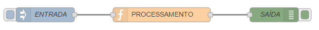

Workshop - NodeRed API's
"API`s REST, são a chave para a conexão de dispositivos IoT com a Internet."
Palestrante: Rogério Fontes / @rogeriofontes
Sobre o palestrante:
APAIXONADO EM MANEIRAS E FORMAS ÁGEIS DE CRIAR CÓDIGO FONTE. PROGRAMANDO SEMPRE TOMANDO UM BOM CAFÉ E ESCUTANDO UM BELO E PESADO ROCK`N ROLL. TRABALHA A MAIS DE 10 ANOS COM JAVA E LINUX, PASSANDO POR ANDROID, PYTHON, PHP E AGORA COM O CORAÇÃO NO ANGULAR.JS E NODE.JS. PROFESSOR UNIVERSITÁRIO DE REDES DE COMPUTADORES, JAVA E DISPOSITIVOS MÓVEIS. JUGLEADER E CO-FUNDADOR DO UAIJUG (GRUPO DE USUÁRIOS DO TRIÂNGULO MINEIRO) E DO TRIÂNGULO HACKERSPACE. ALÉM DISSO AVENTURANDO COMO EMPREENDEDOR E ARQUITETO Everis E APAIXONADO POR ESTUDOS MÚSICAIS.

Vamos falar sobre IoT?

E as API?
O IoT depende de um conjunto de tecnologias como RFID, IPv6, Big Data e APIs. Web APIs, ou mais fortemente as REST API, são a chave para a conexão de dispositivos com a Internet. Por isso a importância delas.
Vamos falar de Node-RED?
O Node-RED é uma ferramenta de programação visual que conecta dispositivos de hardware, APIs e serviços online de maneiras simples. Ele fornece um navegador, que é basicamente um editor, que facilita a criação e conexão de fluxos. Ele usa vários nós na paleta, que podem ser arrastados e com único click e com isso podemos customiza-los. Os nós na paleta que pode ser implementado em tempo de execução em um único clique.
https://nodered.org/
Qual a vantagem?
O Node-RED tem um tempo de execução leve, que é construido em Node.js. Isso aproveita o máximo do modelo orientado a eventos (event-driven) e modelo não bloqueante (non-blocking model). Ideal para hardwares de baixo custo.
O que são esse nós?
O Node-RED possui um sistema de programação por meio de flows, que é uma área de blocos lógicos. Esse blocos lógicos são arrastados e conectados. Esses blocos lógicos são o que chamamos de nós (nodes).
Tipos dos nós?
Existem 3 tipos de nós no NodeRed.
NODES DE ENTRADA (Input)
Os nodes de entrada são os que recebem informações de sensores ou outras API's.
NODES DE TRANSIÇÃO (function, social, etc)
Os nós (nodes) de transição são onde faremos os tratamento dos dados.

NODES DE SAÍDA (Output)
São os nós (nodes) que respondem de acordo com os dados recebidos, sejam estes dados tratados ou não.

Fluxo
Instalação do Node-RED com npm
$ npm install -g –unsafe-perm node-red
Instalação de complementos do Node-RED com npm
$ npm install node-red-dashboard && npm install node-red-node-mongodb && npm install node-red-admin && npm install node-red-node-smooth
Como rodar?
$ node-red
Como rodar?
http://localhost:1880

Workshop de NodeRed
Um Workshop para apresentação do funcionamento básico do NodeRed.
Para instalação via docker: Exemplos